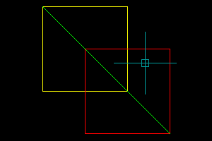
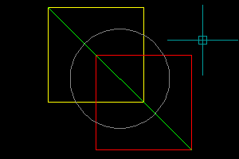

Circular Wipeout
This page is delivered for consistency purposes only, as part of the LeeMac sample module of DynALisp, which shows how DynALisp turns existing AutoLISP programs into a module. The program and its description are the work of Lee Mac, who keeps all the credit for them. The original page, with the latest version, is on Lee Mac's website: https://lee-mac.com/cwipe.html
| Function Syntax | LM-CircularWipeout – original syntax: cwipe / c2wipe (see aliases) |
| Current Version | 1.2 |
| Compatible with AutoCAD for Mac? | Yes |
| Compatible with AutoCAD LT? | Yes |
| Original Page | lee-mac.com/cwipe.html |
Program Description
As the title implies, this program enables the user to create circular wipeouts in the drawing.
The program offers two commands: cwipe allows the user to specify a center & radius and will construct a circular wipeout from these parameters, with all properties (such as Layer, Linetype, Lineweight etc.) inherited from the current settings in AutoCAD when the program is run; c2wipe will allow the user to convert a selection of circle objects to circular wipeouts, with the wipeouts matching all properties of the original circles.
The circular appearance is achieved by generating a polygonal wipeout with a number of points located a given distance from the center. The number of points used to approximate the circle may be altered at the top of the code; the current accuracy is set to 50.
The program should perform successfully in all UCS & Views and on all full versions of AutoCAD which support the use of a wipeout object.
cwipe

c2wipe

Bundled program notes
;;-------------------=={ Circular Wipeout }==-----------------;;
;; ;;
;; Enables the user to create a circular wipeout with a ;;
;; given center and radius. Works in all UCS & Views. ;;
;;------------------------------------------------------------;;
;; Author: Lee Mac, Copyright © 2013 - www.lee-mac.com ;;
;;------------------------------------------------------------;;
;;-------------------=={ Circle to Wipeout }==----------------;;
;; ;;
;; Enables the user to convert a selection of circles to ;;
;; wipeout objects matching the original circle properties. ;;
;; Works with circles constructed in any UCS. ;;
;;------------------------------------------------------------;;
;; Author: Lee Mac, Copyright © 2013 - www.lee-mac.com ;;
;;------------------------------------------------------------;;
Command Names And Aliases
As in every DynALisp module, each program of this sample module has one main command, named LM-*, and the original command names of Lee Mac's page are kept as its aliases: they run the same command, and can be added, renamed or removed in Dyl-Suite (saved in Resources\Aliases.csv). The rows marked ↳ are child commands of LM-CircularWipeout: they are run by their alias, or picked from LM-CircularWipeout when it lists them (their command is named Pst-*).
| Command | Aliases | Name |
|---|---|---|
| LM-CircularWipeout | CWIPE | Circular Wipeout |
| ↳ C2WIPE | – | Circle To Wipeout |